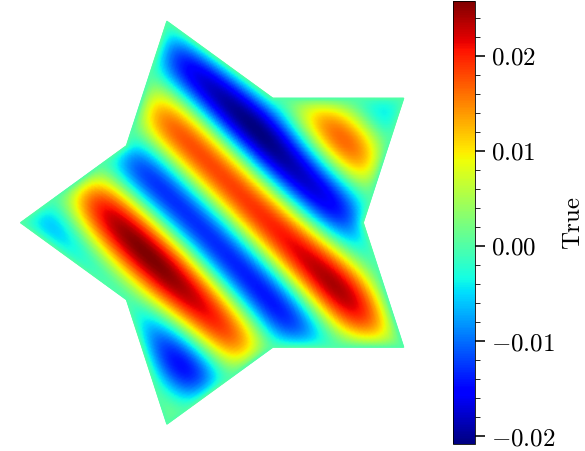
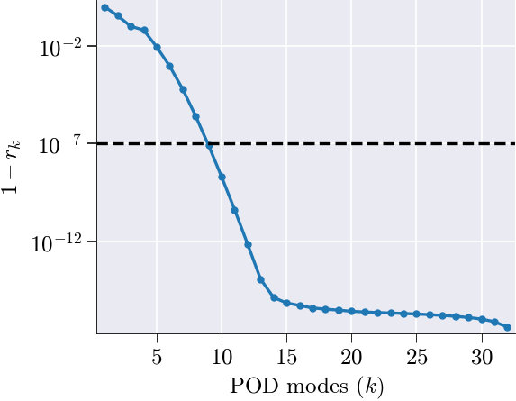
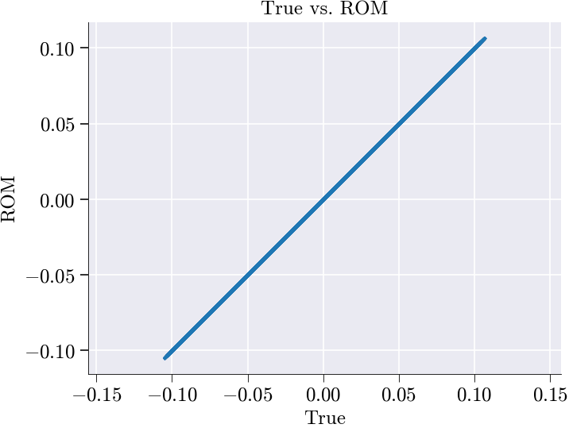
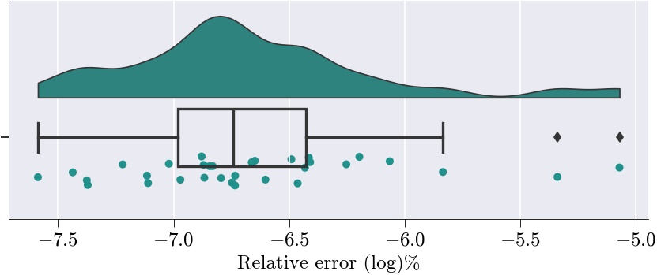
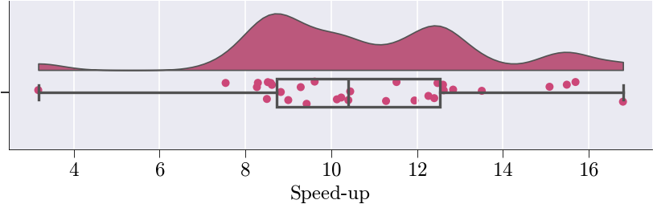

import sys
from pathlib import Path
import importlib
nb_folder = Path().resolve()
PROBLEM_NAME = nb_folder.name
parent_folder = nb_folder.parent
if str(parent_folder) not in sys.path:
sys.path.insert(0, str(parent_folder))Linear heat conduction problem with same material, with full order and reduced order simulations.
Environment Setup
Directories
Standard Imports
#Standard Imports and class import
from skrom.utils.imports import *
from skrom.rom.rom_utils import *
from skrom.utils.reduced_basis.svd import svd_mode_selector
from skrom.rom.rom_error_est import *
from skrom.utils.visualization.color_palette import set_color_palette
from skrom.utils.visualization.generate_vtk import visualize2D
import skrom.problem_classes.static.master_class as master
problem_mod = importlib.import_module(f"{PROBLEM_NAME}.problem_def") #- this runs @register_problemPlot Properties
# # Define a custom color palette with 19 distinct colors
set_color_palette();Full Order Simulation
# Control flag for expensive simulation generation
generate = True
# Conditional execution block for simulation data generation
if generate:
# Create an instance of the linear heat conduction simulation
sim = master.fom_simulation()
sim.run_simulation()
Snap 1/64 params=[0.34788362]
Snap 2/64 params=[5.33665412]
Snap 3/64 params=[4.22785566]
Snap 4/64 params=[2.14787338]
Snap 5/64 params=[2.75454376]
Snap 6/64 params=[3.57567363]
Snap 7/64 params=[4.72006125]
Snap 8/64 params=[1.00994388]
Snap 9/64 params=[1.57403715]
Snap 10/64 params=[5.10755116]
Snap 11/64 params=[3.36945575]
Snap 12/64 params=[2.73422254]
Snap 13/64 params=[1.89671947]
Snap 14/64 params=[4.16180118]
Snap 15/64 params=[5.94643637]
Snap 16/64 params=[0.78026533]
Snap 17/64 params=[0.6858213]
Snap 18/64 params=[5.66716429]
Snap 19/64 params=[3.87460065]
Snap 20/64 params=[1.78719086]
Snap 21/64 params=[2.44784617]
Snap 22/64 params=[3.25941275]
Snap 23/64 params=[5.0135773]
Snap 24/64 params=[1.29389664]
Snap 25/64 params=[1.27211385]
Snap 26/64 params=[4.80881839]
Snap 27/64 params=[3.64544386]
Snap 28/64 params=[3.01340117]
Snap 29/64 params=[2.21820228]
Snap 30/64 params=[4.48575615]
Snap 31/64 params=[5.59973675]
Snap 32/64 params=[0.43603786]
Snap 33/64 params=[5.39634526]
Snap 34/64 params=[1.00160825]
Snap 35/64 params=[1.72606399]
Snap 36/64 params=[3.22195176]
Snap 37/64 params=[4.25906749]
Snap 38/64 params=[2.85238848]
Snap 39/64 params=[0.67939304]
Snap 40/64 params=[4.98208925]
Snap 41/64 params=[4.58446316]
Snap 42/64 params=[0.37557764]
Snap 43/64 params=[2.54536945]
Snap 44/64 params=[3.86460915]
Snap 45/64 params=[3.64294209]
Snap 46/64 params=[2.05324362]
Snap 47/64 params=[1.33199156]
Snap 48/64 params=[5.81416788]
Snap 49/64 params=[5.9969511]
Snap 50/64 params=[1.51185421]
Snap 51/64 params=[2.23604618]
Snap 52/64 params=[3.82282416]
Snap 53/64 params=[4.04432591]
Snap 54/64 params=[2.72800678]
Snap 55/64 params=[0.5552751]
Snap 56/64 params=[4.76708111]
Snap 57/64 params=[5.16207081]
Snap 58/64 params=[0.86211818]
Snap 59/64 params=[3.03235076]
Snap 60/64 params=[4.44177326]
Snap 61/64 params=[3.40447017]
Snap 62/64 params=[1.90583882]
Snap 63/64 params=[1.184146]
Snap 64/64 params=[5.57613952]
Saved full-order solution → fos_solutions.npy
Saved ROM data → ROM_simulation_data.npzLoad Simulation Data
#Load the ROM_data
current_dir = Path().resolve()
rom_dir = current_dir / "ROM_data"
fos_solutions, sim_data = load_rom_data(self=None, rom_data_dir=rom_dir)[load_rom_data] loaded from /Users/syedabidi/Documents/GitHub/scikit-rom/examples/heat_transfer/static/linear/problem_4/ROM_dataData Generation
Generate training solution dataset
# Convert parameter list to a NumPy array (representing system parameters)
# This contains the parameter values for each simulation run (e.g., thermal conductivity,
# boundary conditions, material properties, etc.)
param_list = np.asarray(sim_data['param_list'])
# Load non-linear solutions from the full-order system
# NLS contains the high-fidelity finite element solutions for each parameter set
# Each row represents a complete solution snapshot (discretized spatial field)
LS = np.asarray(fos_solutions)
# Split data into training and testing using predefined masks
# These boolean masks determine which snapshots are used for ROM training vs validation
train_mask, test_mask = sim_data['train_mask'], sim_data['test_mask']
# Apply masks to filter non-linear solutions for training and testing
# Training set: Used to construct the ROM basis functions and train the model
LS_train = LS[train_mask] # Training snapshots with Dirichlet boundary conditions applied
# Testing set: Used to evaluate ROM accuracy and performance on unseen data
LS_test = LS[test_mask] # Testing snapshots with Dirichlet boundary conditions applied
# Get the number of snapshots (parameter samples or time instances)
# N_snap: Total number of simulation snapshots available
# Second dimension: Number of degrees of freedom (DOFs) in the spatial discretization
N_snap, _ = np.shape(LS)
# Display the total number of snapshots for verification
print(N_snap) # Print the number of snapshots available64Training Solution Snapshots
visualize2D(LS_test[0],sim_data['basis'].item())
Mean Subtraction
# Compute the mean temperature field across all training snapshots
# This represents the "average" or "reference" temperature distribution
# Shape: [N_dof] - one mean value for each spatial degree of freedom
LS_train_mean = np.mean(LS_train,axis = 0)
# Mean-center the training data by subtracting the mean field
# This creates fluctuations/deviations from the mean temperature distribution
# Shape: [N_train_snapshots, N_dof] - same as original but now mean-centered
# Each row now represents how much each snapshot deviates from the average
LS_train_ms = LS_train - LS_train_mean
#We will use SVD on the mean subtracted matrix dataPerforming SVD on training snapshots
# Configure plot styling for POD analysis visualization
plt.rcParams['lines.markersize'] = 6 # Set marker size for data points
plt.rcParams['lines.linewidth'] = 2.0 # Set line thickness for better visibility
# Perform Singular Value Decomposition (SVD) for POD mode selection
# SVD decomposes the mean-centered training data to find optimal basis functions
n_sel, U = svd_mode_selector(LS_train_ms, # Input: mean-centered training snapshots
tolerance=1e-7, # Convergence criterion for mode selection
modes=True) # Return both number of modes and basis vectors
# Extract the selected POD basis vectors (spatial modes)
# V_sel contains the first n_sel most energetic POD modes
# Shape: [N_dof, n_sel] - each column is a spatial basis function
V_sel = U[:, :n_sel] # This will be passed to the ROM simulation function
# Set axis labels for the POD energy plot (generated by svd_mode_selector)
plt.ylabel('$1-r_{k}$') # Energy not captured by first k modes
plt.xlabel('POD modes ($k$)') # Number of POD modes retainedNumber of modes selected: 9Text(0.5, 0, 'POD modes ($k$)')
ROM Simulation
# Initialize the reduced-order model (ROM) simulation with affine decomposition for speed-up
# V_sel : precomputed basis matrix (e.g., selected POD modes)
rom = master.rom_simulation(V_sel=V_sel)[load_rom_data] loaded from /Users/syedabidi/Documents/GitHub/scikit-rom/examples/heat_transfer/static/linear/problem_4/ROM_data# Run the reduced-order model (ROM) simulation.
# rom object will contain the NLS rom simulation solutions and other simulation aspects required by ROM such as the param_list etc.
rom.run_rom_simulation();Snap 1/64 params=[5.39634526]
Snap 2/64 params=[1.00160825]
Snap 3/64 params=[1.72606399]
Snap 4/64 params=[3.22195176]
Snap 5/64 params=[4.25906749]
Snap 6/64 params=[2.85238848]
Snap 7/64 params=[0.67939304]
Snap 8/64 params=[4.98208925]
Snap 9/64 params=[4.58446316]
Snap 10/64 params=[0.37557764]
Snap 11/64 params=[2.54536945]
Snap 12/64 params=[3.86460915]
Snap 13/64 params=[3.64294209]
Snap 14/64 params=[2.05324362]
Snap 15/64 params=[1.33199156]
Snap 16/64 params=[5.81416788]
Snap 17/64 params=[5.9969511]
Snap 18/64 params=[1.51185421]
Snap 19/64 params=[2.23604618]
Snap 20/64 params=[3.82282416]
Snap 21/64 params=[4.04432591]
Snap 22/64 params=[2.72800678]
Snap 23/64 params=[0.5552751]
Snap 24/64 params=[4.76708111]
Snap 25/64 params=[5.16207081]
Snap 26/64 params=[0.86211818]
Snap 27/64 params=[3.03235076]
Snap 28/64 params=[4.44177326]
Snap 29/64 params=[3.40447017]
Snap 30/64 params=[1.90583882]
Snap 31/64 params=[1.184146]
Snap 32/64 params=[5.57613952]#Assign values for the statistics
LS_rom = np.asarray(rom.rom_solutions)
ROM_speed_up = rom.speed_up
ROM_speed_up=ROM_speed_up[1:]
ROM_relative_error = rom.rom_errorROM solution vs. Full order solution performance statistics
# --- Hyper-reduced ROM error analysis ---
# Compute a flat matrix of error metrics comparing true nonlinear solutions to hyper-ROM approximations
matrix = compute_rom_error_metrics_flat(LS_test, LS_rom)
# Produce a text-based report summarizing these hyper-ROM error metrics
generate_rom_error_report(matrix)
# Plot diagnostic figures: error vs. speed-up for the hyper-reduced ROM
plot_rom_error_diagnostics_flat(
LS_test, # full-order (true) solution snapshots
LS_rom, # hyper-ROM-generated solution snapshots
ROM_relative_error, # precomputed relative error of the hyper-ROM
ROM_speed_up, # precomputed speed-up factor of the hyper-ROM
sim_axis=['True', 'ROM'],
metrics=matrix # the matrix of error metrics just computed
)===================
ROM Accuracy Report
===================
Global Errors:
L2 Error: 1.4160e-07
Relative L2 Error: 5.1520e-09
L∞ Error: 6.2199e-09
Relative L∞ Error: 5.8303e-08
RMSE: 1.7356e-10
MAE: 7.5563e-11
Statistical Fit:
R² Score: 1.0000
Explained Variance: 1.0000
Error Distribution:
Median Error: 0.0000e+00
95th Percentile Error: 2.5206e-10
Time/Parameter-Dependent Errors:
Average Rel L2 Error over time/parameter: 6.5968e-09
Max Rel L2 Error over time/parameter: 8.5180e-08
Min Rel L2 Error over time/parameter: 2.5871e-10
――――――――――――――――――――――――――――――――――――――――――――――――――――――――――――――――――――――――――――――――――――――――――――――――――――――――――――――――――――――――――――――――――――――――――――――――――――――――――――――――――――――――――――――――――――――――――――――――――――――――――――――――――――――――――――――――――――――――――――――――――――――――――――――――――――――――――――――――――――――――――――――――――――――――――――――――――――――――――――――――――――――――――――――――――――――――――――――――――――――――――――――――――――――――――――――――――――――――――――――――――――――――――――――――――――――――――――――――――――――――――――――――――――――――――――――――――――――――――――――――――――――――――――――――――――
spatial_shape not given → skipping spatial snapshots.
--------------------------------------------------------------------------------------------------------------------------------------------------------------------------------------------------------------------------------------------------------------------------------------------------------------------------------------------------------------------------------------------------------------------------------------------------------------------------------------------------------------------
